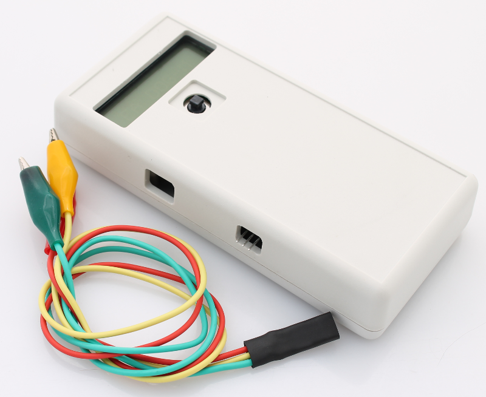

CheapStat is an open source potentiostat originally designed by Aaron Rowe, Andrew Bonham, Michael Zimmer, Kevin Plaxco and colleagues at University of Califonia Santa Barbara (UCSB). CheapStat designs along with educational applications and sample data are outlined in the 2011 manuscript “CheapStat: An Open-Source, “Do-It-Yourself” Potentiostat for Analytical and Educational Applications”. Instructions for building a CheapStat along with the design files and firmware and published on the UCSB website at http://web.chem.ucsb.edu/~kwp/cheapstat/.

CheapStat potentiostat units are available for $135 (IO Rodeo Part # POT-01) and include the following:
- Programmed and tested CheapStat PCB
- Machined enclosure (PCB is pre-mounted in the enclosure)
- Set of 3 alligator clip leads for connecting to electrodes
- USB cable (3ft long USB A to USB mini-B)